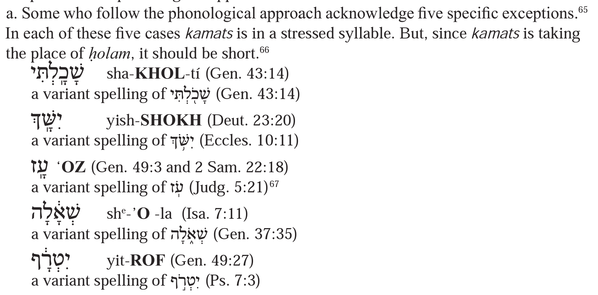
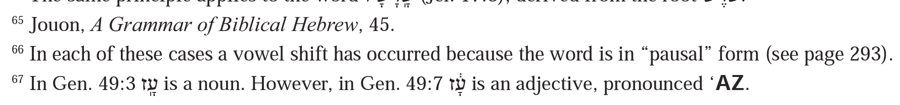

| 235 | וַתִּירֶ֤אןָ | vat-tí-re-na | E1:17 |
| 235 | וַתִּרְאֶ֙ינָה֙ | vat-tir-’e-na | Js24:7 |
| 235 | בְּרֵאשִׁ֖ית | be-ré-shít | G1:1 |
| 235 | לֹ֨א | ló | G2:5 |
| 235 | מָאתַ֖יִם | ma-ta-yim | G32:15 |
| 235 | לֵאמֹ֑ר | lé-mór | G1:22 |
| 235 | מְלַאכְתּ֖וֹ | me-lakh-tó | G2:2 |
| 235 | וְהָֽאסַפְסֻף֙ | ve-ha-saf-suf | N11:4 |
| 235 | וְהָאָ֖רֶץ | ve-ha-’a-rets
ve-ha-’a-rets 1 | G2:1 |
| 235 | וְאֵ֖ד | ve-’éd | G2:6 |
| 236 | מְאֹ֑ד | me-’ód | G1:31 |
| 236 | אוֹיֵ֛ב | ’ó-yév | E15:9 |
| 236 | רְא֗וּ | re-’u | G39:14 |
| 236 | יֶאְשָׁ֔מוּ | ye’-sha-mu | Je2:3 |
| 236 | וַיֶּאְסֹ֖ר | vay-ye’-sór
vay-ye’-sór 1 | E14:6 |
| 236 | נֶאְדָּ֣ר | ne’-dar | Exod |
| 236 | וְלָראוּבֵנִ֨י 2 | ve-la-ru-vé-ní | D3:16 |
| 236 | יְר֣אוּ | ye-ru | Ps34:10 |
| 236 | לְצַוְּארֵ֥י | le-tsav-ve-ré | Ju5:30 |
| 238 | שְׁמַ֣ע | she-ma‘ | G21:12 |
| 238 | שָׁמַ֖עְתִּי | sha-ma‘-tí | G3:10 |
| 238 | רַעְיָתִ֔י | ra‘-ya-tí | S1:15 |
| 238 | יָגַ֔עְתִּי | ya-ga‘-tí | I49:4 |
| 238 | אַעְתִּ֣יר | ’a‘-tír | E8:5 |
| 238 | אֲבַעְבֻּעֹ֖ת | ’a-va‘-bu-‘ót | E9:9 |
| 238 | אַרְבַּ֥ע | ’ar-ba‘ | G11:16 |
| 242 | אֵל | ’él | (G14:20) |
| 242 | אֶל | ’el | (G1:9) |
| 242 | עוֹז | ‘óz | (Ps84:6) |
| 242 | עׇזִּ֤י 1 | ‘oz-zí | (E15:2) 2 |
| 242 | וַיִּֽירְא֥וּ | vay-yí-re-’u | (G20:8) |
| 242 | וַיִּרְא֤וּ | vay-yir-’u | (G6:2) |
| 242 | שׁ֥וּבוּ | shu-vu | (G43:13) |
| 242 | שֻׁ֖בוּ | shu-vu | (G43:2) |
| 242 | אָ֣ב | ‘av
’av 3 | (G44:20) |
| 242 | אַב(־הֲמ֥וֹן) 4 | ‘av
’av 5 | (G17:5) |
| 243 | יֶחֱרֶ֤ה | ye-ḥe-re | (E32:11) |
| 243 | יֶ֣לֶד | ye-led | (I9:5) |
| 243 | חֳדָשִׁ֗ים | ḥo-da-shím | (G38:24) |
| 243 | חֹ֥דֶשׁ 1 | ḥó-desh | (G29:14) |
| 243 | אֲבִ֕י | ’a-ví | (G4:20) |
| 245 | מִמֶּ֤גֶד | mim-me-ged | D33:13 |
| 245 | שַׁבָּ֥ת | shab-bat | E16:25 |
| 245 | כַּבֵּ֥ד | kab-béd | E20:12 1 |
| 245 | שִׁבֵּֽר׃ | shib-bér | E9:25 |
| 245 | מִדַּבֵּ֥ר | mid-dab-bér | G31:29 |
| 246 | נַ֗עַר | na-‘ar | G37:2 |
| 246 | הַנַּ֛עַר | han-na-‘ar | G43:8 |
| 246 | בַּנַּ֖עַר | ban-na-‘ar | 2S18:12 |
| 246 | לַנַּ֖עַר | lan-na-‘ar | 2S18:32 |
| 246 | כַנַּ֙עַר֙ | khan-na-‘ar | 2S18:32 |
| 246 | הַיְקוּם֙ | hay-kum | G7:4 |
| 246 | הַמְיַלֶּ֙דֶת֙ | ham-yal-le-det | G35:17 |
| 246 | שֶׁלִּ֖י | shel-lí | S1:6 |
| 246 | שֶׁנָּתַ֨ן | shen-na-tan | Er8:20 |
| 246 | שֶׁשְּׁזָפַ֖תְנִי 1 | shesh-she-za-fat-ní
shesh-she-za-fat-ní 2 | S1:6 |
| 246 | שֶׁיָּפ֙וּחַ֙ | shey-ya-fu-aḥ | S2:17 |
| 246 | שֶׁמָּצָ֔אתִי | shem-ma-tsa-tí | S3:4 |
| 246 | שֶׁרֹּאשִׁי֙ | sher-ró-shí | S5:2 |
| 246 | מִטַּל֙ | mit-tal | G27:28 |
| 246 | מִדְּבַ֖ר | mid-de-var | 2S19:44 |
| 246 | מִדְבַּ֥ר | mid-bar | E19:1 |
| 247 | וַיֵּ֣לֶךְ | vay-yé-lekh | G12:4 |
| 247 | וַתֵּ֣לֶךְ | vat-té-lekh | G21:14 |
| 247 | וַיָּ֣מׇת | vay-ya-mot | G11:28 |
| 247 | וַתָּ֣מׇת | vat-ta-mot | G23:2 |
| 247 | וַיָּמֻ֖תוּ | vay-ya-mu-tu | L10:2 |
| 247 | וַנָּבֹ֕א | van-na-vó | D1:19 |
| 247 | וַתָּבֹ֖אוּ | vat-ta-vó-’u | D1:19 |
| 247 | וַתָּבֹ֣אנָה | vat-ta-vó-na | G41:21 |
| 247 | וַיְדַבֵּ֥ר | vay-dab-bér | E6:10 |
| 247 | וַתְּדַבֵּ֣ר | vat-te-dab-bér | G39:17 |
| 247 | וַיְהִ֥י | vay-hí | G12:10 |
| 247 | וַתְּהִ֥י | vat-te-hí | G11:30 |
| 247 | וַיְכַ֤ל | vay-khal | G2:2 |
| 247 | וַתְּכַ֖ל | vat-te-khal | G24:19 |
| 247 | וַיְכֻלּ֛וּ | vay-khul-lu | G2:1 |
| 247 | וַיִּכְל֥וּ | vay-yikh-lu | G21:15 |
| 248 | צִוָּ֥ה | tsiv-va | G6:22 |
| 248 | וְקִבַּצְתִּ֤י | ve-kib-bats-tí | Ee11:17 |
| 248 | וַיְגַנֵּב֙ | vay-gan-név | 2S15:6 |
| 248 | גֻּנַּ֔בְתִּי | gun-nav-tí | G40:15 |
| 248 | צֻוֵּ֖יתָה | tsuv-vé-ta | G45:19 |
| 248 | קֻבַּ֥ר | kub-bar | G25:10 |
| 248 | וַיִּתְגַּנֵּ֥ב | vay-yit-gan-név | 2S19:4 |
| 248 | הִֽתְקַבְּצוּ֙ | hit-kab-be-tsu
hit-kab-be-tsu 1 | Je49:14 |
| 248 | וְהִתְפַּלֵּ֤ל | ve-hit-pal-lél | Je42:2 |
| 249 | אִשָּׁ֔ה | ’ish-sha | G2:23 |
| 249 | אִישָׁ֔הּ | ’í-shah | N5:13 |
| 249 | הַמַּלְכָּ֔ה | ham-mal-ka | Es1:9 |
| 249 | מַלְכָּ֑הּ | mal-kah | Js6:2 |
| 249 | כַּמָּ֕ה | kam-ma | G47:8 |
| 249 | כָּמַ֣הּ | ka-mah | Ps63:2 |
| 249 | אַ֣רְצָה | ’ar-tsa | G11:31 |
| 249 | אַרְצָ֔הּ | ’ar-tsah | I34:9 |
| 252 | שָׂרִ֔ים | sa-rím | N22:15 |
| 252 | שָׁרִ֣ים | sha-rím | 2S19:36 |
| 252 | וְשַׁבְתִּ֣י | ve-shav-tí | Je29:14 |
| 252 | וָשַׂ֔בְתִּי | va-sav-tí | 1S12:2 |
| 252 | שָׁ֔ם | sham | G2:8 |
| 252 | שָׂ֧ם | sam | G21:14 |
| 254 | דַּ֣ק | dak | E16:14 |
| 254 | מִכְתַּב֙ | mikh-tav | E39:30 |
| 254 | כַּמַּ֖יִם | kam-ma-yim | I11:9 |
| 255 | יִשְׂרָאֵֽל׃ | yis-ra-’él | G33:20 |
| 255 | הִסְכַּ֥לְתָּֽ | his-kal-ta | G31:28 |
| 255 | בׇּהְשַׁמָּה֙ | boh-sham-ma | L26:43 |
| 255 | יִהְי֕וּ | yih-yu | G41:27 |
| 255 | נֵ֣רְדְּ׀ | nérd | S4:14 |
| 255 | וַיֵּ֥בְךְּ | vay-yévk | G37:35 |
| 255 | וְיֹלַ֣דְתְּ | ve-yó-ladt | G16:11 |
| 257 | בִּשְׁכֶֽם׃ | bish-khem | G37:12 |
| 257 | בִּנְפֹ֖ל | bin-fól | I30:25 |
| 257 | מַלְכֵ֣י | mal-khé | D3:8 |
| 257 | רִדְפ֥וּ | rid-fu | Js2:5 |
| 261 | שָׁבַת֙ | sha-vat | G2:3 |
| 261 | כָּבֵ֣ד | ka-véd | G13:2 |
| 261 | שָׁבַ֖ר | sha-var | 1K13:28 |
| 261 | מְדַבֵּ֣ר | me-dab-bér | G29:9 |
| 262 | לְךָ֔ | le-kha | G3:11 |
| 262 | בְּנֵ֤י | be-né | G6:4 |
| 263 | בִּתְּךָ֖ | bit-te-kha | G29:18 |
| 263 | מִפְּנֵ֖י | mip-pe-né | G7:7 |
| 263 | קוֹלְךָ֖ | kó-le-kha | Ju18:25 |
| 263 | וּמָלְא֥וּ | u-ma-le-’u | I13:21 |
| 263 | עִירְךָ֖ | ‘í-re-kha | Da9:19 |
| 263 | הִנְנִ֥י | hi-ne-ní | G9:9 |
| 263 | נָדְדָ֖ה | na-de-da | Es6:1 |
| 263 | וְהִפְקַדְתִּ֨י | ve-hif-kad-tí | L26:16 |
| 263 | נִכְח֥וֹ | nikh-ḥó | E14:2 |
| 263 | וְשָׁמַטְתָּ֗ה | ve-sha-mat-ta | Je17:4 |
| 263 | שִׁבְתְּךָ֙ | shiv-te-kha | 1K8:30 |
| 263 | אִשְׁתְּךָ֖ | ’ish-te-kha | G12:18 |
| 264 | אָֽכְלָה֙ | ’a-khe-la | N21:28 |
| 264 | וַיֹּ֣אמְר֔וּ | vay-yó-me-ru | G38:21 |
| 264 | וַיֹּ֨אמְר֜וּ | vay-yó-me-ru | E16:15 |
| 264 | וַֽיְהִ֥י | vay-hí | G2:7 |
| 264 | וַֽיְחִ֣י | vay-ḥí | G5:3 |
| 264 | יִֽהְיֶ֖ה | yih-ye | G1:29 |
| 264 | יִחְיֶ֖ה | yiḥ-ye | N24:23 |
| 264 | לִהְי֖וֹת | lih-yót | G34:22 |
| 264 | לִֽחְי֥וֹת | liḥ-yót | Ee33:12 |
| 264 | רֹ֥דְפֵי | ró-de-fé | I51:1 |
| 264 | הָ֥יְתָה | ha-ye-ta | Ju21:3 |
| 264 | מִצְרַ֔יְמָה | mits-ray-ma | G41:57 |
| 264 | מִצְרָ֑יְמָה | mits-ray-ma | G12:11 |
| 265 | יָכֹ֑לְתִּי | ya-khól-tí | G30:8 |
| 265 | הַלַּ֔יְלָה | hal-lay-la | G1:16 |
| 265 | וַיְכַ֖ל | vay-khal | G17:22 |
| 265 | וּ֨בְמַתְכֻּנְתּ֔וֹ | uv-mat-kun-tó | E30:32 |
| 265 | וּ֨לְכַלֹּתָ֔ם | ul-khal-ló-tam | E32:12 |
| 265 | וּכְתַבְתָּ֛ם | ukh-tav-tam | D6:9 |
| 265 | בְּנֵֽךְ׃ | be-nékh | G30:14 |
| 265 | חֵֽטְא׃ | ḥét | L19:17 |
| 265 | וַיֵּ֥שְׁתְּ | vay-yésht | G9:21 |
| 265 | אַ֨תְּ | ’at
’att 1 | 1K2:22 |
| 266 | בַּדְּבָרִ֔ים | bad-de-va-rím | I37:4 |
| 266 | הַדְּבָרִ֣ים | had-de-va-rím | G15:1 1 |
| 266 | כַּדְּבָרִ֖ים | kad-de-va-rím | G24:28 |
| 266 | לַדְּבָרִ֗ים | lad-de-va-rím | 1K10:7 |
| 266 | הַיְלָדִ֗ים | hay-la-dím | G33:1 |
| 266 | הַיְאֹ֗ר | hay-’ór | G41:2 |
| 266 | הַמְאׇדָּמִ֔ים | ham-’od-da-mím | E39:34 |
| 266 | הַיְּהוּדִ֡ים | hay-ye-hu-dím | E6:13 |
| 266 | הַמְּעָרָ֔ה | ham-me-‘a-ra | G49:29 |
| 266 | לַלְוִיִּם֙ | lal-viy-yim | Js18:7 |
| 266 | הַֽצְפַרְדְּעִ֔ים | hats-far-de-‘ím | E8:5 |
| 266 | וְלַ֨לְוִיִּ֔ם | ve-lal-viy-yim | Js14:3 |
| 267 | הַֽמְדַבֵּ֥ר | ha-me-dab-bér
ham-dab-bér 1 | G45:12 |
| 267 | הַלְוִיִּ֑ם | hal-viy-yim | 2C29:5 |
| 267 | הַלְוִיִּֽם׃ 2 | ha-le-viy-yim
hal-viy-yim 3 | 2C24:5 |
| 267 | בִּנְבִיאִ֔ים | bin-ví-’ím | ? 4 |
| 268 | וּבְנֵ֖י | uv-né | (G10:3) |
| 268 | וּֽדְמֵה־לְךָ֤ | [not-provided]
ud-mé-le-kha 1 | S8:14 |
| 268 | וּֽסְגֹ֥ר | [not-provided]
us-gór 2 | I26:20 |
| 268 | וּֽבְשׇׁכְבְּךָ֖ | u-ve-shokh-be-kha
uv-shokh-be-kha 3 | D6:7 |
| 268 | וּכְכׇל־מִשְׁפָּטָ֖יו | u-khe-khol-mish-pa-tav | N9:3 |
| 270 | יָ֥ם | yam | G14:3 |
| 270 | מִשְׁפָּֽט׃ | mish-pat | G18:25 |
| 270 | חָֽבְר֔וּ | ḥa-ve-ru | G14:3 |
| 270 | חָֽכְמָ֖ה | ḥa-khe-ma | Zc9:2 |
| 270 | שָׁנָ֔ה | sha-na | G5:3 |
| 270 | בַּמָּק֖וֹם | bam-ma-kóm | G20:11 |
| 270 | וּבִנְךָ֣ | u-vin-kha | D6:2 |
| 270 | חֳדָשִׁ֑ים | ḥo-da-shím | E12:2 |
| 270 | עֳנִ֥י | ‘o-ní | E3:7 |
| 271 | הׇגְלָה֙ | hog-la | Es2:6 |
| 271 | כׇּזְבִּ֣י | koz-bí | N25:15 |
| 271 | קׇרְבָּ֖ן | kor-ban | L1:2 |
| 271 | וַיָּ֣קׇם | vay-ya-kom | G21:32 1 |
| 271 | חׇכְמָ֑ה | ḥokh-ma | E28:3 |
| 271 | בְּאׇ֨סְפְּךָ֔ | be-’os-pe-kha | D16:13 |
| 271 | תְּחׇגֻּֽהוּ׃ | te-ḥog-gu-hu | E12:14 |
| 271 | רׇנִּ֥י | ron-ní | I54:1 |
| 271 | וַתָּ֤שׇׁב | vat-ta-shov | G8:9 |
| 271 | וַיָּ֤מׇל | vay-ya-mol | G21:4 |
| 271 | בְעׇזְּךָ֖ | ve-oz-ze-kha
ve-‘oz-ze-kha 2 | E15:13 |
| 272 | וַיָּ֧גׇר | vay-ya-gor | G21:34 |
| 272 | וַתָּ֖מׇת | vat-ta-mot | G35:19 |
| 272 | לְחׇדְשֵׁ֖י | ḥod-shé
le-ḥod-shé 1 | E12:2 |
| 272 | אׇזְנוֹ֙ | ’oz-nó | E21:6 |
| 272 | יַֽעֲזׇב־אִ֔ישׁ | ya-‘a-zov-ísh
ya-‘a-zov-’ísh 2 | G2:24 |
| 272 | כׇּל־הַנֹּגֵ֥עַ | kol-han-nó-gé-a‘ | E29:37 |
| 272 | לְחׇק־לְךָ֥ | le-ḥok-le-kha | E12:24 |
| 273 | אֲשֶׁר־אַתָּ֥ה מׇרְאֶ֖ה | mor-’e | E25:40 |
| 273 | אֲשֶׁ֥ר הׇרְאֵ֖יתָ | hor-’é-ta | E26:30 |
| 273 | שׇׁפְטָ֣ה | shof-ta | Ps82:8 |
| 273 | קׇרְבָ֣ה | kor-va | Ps69:19 |
| 273 | וְקָֽרְבָה֙ אֵ֣שֶׁת הָֽאֶחָ֔ד | ve-ka-re-va | D25:11 |
| 273 | לְעׇבְדָ֖הּ | le-‘ov-dah | G2:15 |
| 273 | וּלְשׇׁמְרָֽהּ׃ | ul-shom-rah | G2:15 |
| 273 | צׇהֳרָ֑יִם | tso-ho-ra-yim | I16:3 |
| 273 | טׇהֳרָתֽוֹ׃ | to-ho-ra-tó | L13:35 |
| 273 | פׇּֽעֳל֔וֹ | po-‘o-ló | D32:4 |
| 273 | מִֽמָּחֳרָ֔ת 1 | mim-ma-ḥo-rat | G19:34 |
| 273 | בָּ֣מֳתֵי | [not-provided]
ba-mo-té 2 | D32:13 |
| 274 | רָאשִֽׁים׃ 1 | ra-shím | (G2:10) |
| 274 | רָאשֵׁ֥י | ra-shé | (G8:5) |
| 274 | קָֽבָה־לִּי֙ | ka-va-llí | N22:11 |
| 274 | אָֽרָה־לִּ֜י | ’a-ra-llí | N22:6 |
| 275 | קׇֽדָשִׁ֔ים | ko-da-shím | E29:37 |
| 275 | הַקֳּדָשִׁ֗ים | hak-ko-da-shím | E28:38 |
| 275 | שָׁכָֽלְתִּי׃ | sha-khol-tí
sha-khal-tí 1 | G43:14 |
| 275 | יִשָּֽׁךְ׃ | yish-shokh
yish-shakh 2 | D23:20 |
| 275 | עָֽז׃ | ‘oz
‘az 3 | G49:3 4 |
| 275 | שְׁאָ֔לָה | she-’o-la
she-’a-la 5 | I7:11 |
| 275 | יִטְרָ֔ף | yit-rof
yit-raf 6 | G49:27 |
| 275 | כׇּֽל־הַבְּכ֡וֹר | kol-hab-be-khór | D15:19 |
| 275 | בְּכׇֽל־מַעֲשֶׂ֔ךָ | be-khol-ma-‘a-se-kha | D15:10 |
| 275 | מִן־הַבָּתִּ֥ים | min-hab-bat-tím | E8:9 |
| 275 | יָם־הַמֶּ֖לַח | yam-ham-me-laḥ | N34:3 |
| 275 | עָ֔ז | ‘az | G49:7 |
| 276 | שִׂ֣יחַ | sí-aḥ | G2:5 |
| 276 | אֱל֙וֹהַּ֙ | ’e-ló-ah | I44:8 |
| 276 | פָר֔וּעַ | fa-ru-a‘ | L13:45 |
| 276 | עֲוֺ֥ן | ‘a-vón | G15:16 |
| 276 | עֵדְוֺתָ֤יו 1 | ‘éd-vó-tav
‘é-de-vó-tav 2 | 2K23:3 |
| 277 | דְּוֺתָ֖הּ | de-vó-tah | L12:2 |
| 277 | וְקֹוֵ֥י 1 | ve-kó-vé | Ps37:9 |
| 277 | וְקוֹיֵ֤ | ve-kó-yé | I40:31 |
| 277 | מְצַוְּךָ֙ | me-tsav-ve-kha | D4:40 |
| 277 | הִתְאַוּ֖וּ | hit-’av-vu | N |
| 277 | יְקַוּ֔וּ | ye-kav-vu | I51:5 |
| 277 | הַוּ֑וֹת | hav-vót | Ps38:13 |
| 277 | הִוָּסְדָ֖הֿ | hiv-va-se-da | E9:18 |
| 277 | תִּוָּשַׁ֣ע | tiv-va-sha‘ | Je23:6 |
| 277 | חַוָּ֑ה | ḥav-va | G3:20 |
| 277 | מִצְוֺ֣ת | mits-vót | L4:2 |
| 277 | מַצּ֣וֹת | mats-tsót | E12:15 |
| 277 | סוּסָ֑יו | su-sav | Je4:13 |
| 277 | כׇּל־יָמָ֑יו | ya-mav | 2K12:3 |
| 277 | חַיֶּֽיךָ׃ | ḥay-ye-kha | G3:14 |
| 277 | אֵלֶ֖יךָ | ’é-le-kha | G6:20 |
| 277 | דְּרָכֶֽיהָ׃ | de-ra-khe-ha | Je2:23 |
| 277 | יְלָדֶ֖יהָ | ye-la-de-ha | R1:5 |
| 278 | יְהֹוָ֥ה | ’a-dó-nai
’a-dó-nay | G2:4 |
| 278 | אֱלֹהִ֑ים | ’e-ló-hím | G1:1 |
| 278 | יְרוּשָׁלַ֗͏ִם | ye-ru-sha-la-yim | Js10:1 |
| 278 | וְיִשָּׂשכָ֖ר | ve-yis-sa-khar | G35:23 |
| 278 | ה֣וּא | hu | G2:11 |
| 278 | הִ֖וא | hí | G10:12 |
| 278 | נַעֲרָ֤ | na-‘a-ra | D22:28 |
| 278 | אֶפְתַּ֤ח | ’ef-taḥ | I41:18 |
| 278 | תּוֹרָ֣ה | tó-ra | E12:49 |
| 278 | יָרַ֛דְנוּ | ya-rad-nu | G43:20 |
| 278 | נֶ֔סֶךְ | ne-sekh | G35:14 |
| 280 | הָאֹ֔הֶל | ha-’ó-hel | G18:2 |
| 280 | הָאֹֽהֱלָה׃ | ha-’ó-he-la | E18:7 |
| 280 | צֹֽעַר׃ | tsó-‘ar | G13:10 |
| 280 | צֹֽעֲרָה׃ | tsó-‘a-ra | G19:23 |
| 280 | רֹדְפֵ֣י זִמָּ֑ה | ró-de-fé | Ps119:150 |
| 280 | הָיְתָ֥ה לְגֽוֹי׃ | ha-ye-ta | E9:24 |
| 280 | הָ֣יְתָה זֹּ֑את | ha-ye-ta | Ps118:23 |
| 280 | שָֽׁאֲל֣וּ עֵינַ֔י | sha-’a-lu | Ec2:10 |
| 280 | שָׁ֣אֲלוּ לֶ֔חֶם | sha-’a-lu | La4:4 |
| 280 | וַֽיֶּחֱזוּ֙ אֶת־הָ֣אֱלֹהִ֔ים | vay-ye-ḥe-zu | E24:11 |
| 280 | וַיֶּ֣חֱזוּ לָ֔ךְ | vay-ye-ḥe-zu | La2:14 |
| 282 | אֲשֶׁר־שָׂ֣ם | ’a-sher-sam | G28:18 |
| 283 | כִּי־לִ֖י | kí-lí | E19:5 |
| 283 | מִן־הַבֹּ֖קֶר | min-hab-bó-ker | E18:13 |
| 283 | וְאֶת־כׇּל־אֲשֶׁר־בָּ֔ם | ve-’et-kol-’a-sher-bam
ve-’et-kol-’a-sher-bam | E20:11 |
| 289 | יְשִֽׂמְךָ֣ | ye-sí-me-kha
ye-sim-kha | G48:20 |
| 289 | וַיְשִֽׂימְךָ֣ | vay-sí-me-kha | 1K10:9 |
| 289 | וְהוֹתִרְךָ֤ | ve-hó-tí-re-kha
ve-hó-tir-kha | D28:11 |
| 289 | וְהוֹתִֽירְךָ֩ | ve-hó-tí-re-kha | D28:11 |
| 289 | גְּנֻֽבְתִ֣י | ge-nu-ve-tí
ge-nuv-tí | G31:39 |
| 289 | וַֽיְדַבְּר֛וּ | vay-dab-be-ru | G34:20 |
| 289 | וַֽיְהִי־עֶ֥רֶב | vay-hí-‘e-rev | G1:5 |
| 289 | וַֽיְחִי־שֵׁ֕ת | vay-ḥí-shét | G5:6 |
| 290 | יִֽחְיֶה֒ | yiḥ-ye | G31:32 |
| 290 | אָֽנָּ֤א | ’an-na | Ne1:5 |
| 290 | בָֽתֵּיהֶם֙ | vat-té-hem | Je6:12 |
| 291 | לְאׇכְלָ֑ה | le-’okh-la | G1:30 |
| 291 | אָכְלָ֛ה | ’a-khe-la | 2S18:8 |
| 291 | זׇכְרָ֥ה | zokh-ra | Ne13:29 |
| 291 | זָֽכְרָה֙ | za-khe-ra | L1:9 |
| 291 | וַיִּרְא֣וּ | vay-yir-’u | G37:4 |
| 291 | וַיִּֽרְא֣וּ | vay-yí-re-’u
vay-yir-’u | Js4:14 |
| 292 | וְיָדְע֤וּ | ve-ya-de-‘u | E7:5 |
| 292 | וְֽאֶת־פַּתְרֻסִ֞ים | ve-’et-pat-ru-sím | G10:14 |
| 292 | וְֽנָאוָ֔ה | ve-na-va | S1:5 |
| 292 | וַיִּֽהְי֤וּ | vay-yih-yu | G2:25 |
| 292 | וַיִּֽחְי֗וּ | vay-yiḥ-yu | Ee37:10 |
| 292 | תִּהְי֑וּ | tih-yu | L19:2 |
| 292 | וַֽיְהִי־אֽוֹר׃ | vay-hí
vay-hí | G1:3 |
| 292 | וַֽיְחִי־תֶ֖רַח | vay-ḥí
vay-ḥí | G11:26 |
| 292 | וִֽהְי֤וּ | vih-yu | 1S4:9 |
| 300 | יָֽלְדָה־לּ֖וֹ | ya-le-da-lló | G24:47 |
| 300 | זֶה־לִּ֞י | ze-llí | G31:41 |
| 300 | מַה־לָּ֣ךְ | ma-llakh | G21:17 |
| 300 | הַשָּׂדֶ֗ה | has-sa-de | G2:5 |
| 303 | בַּאדֹנָ֣י | ba-dó-nay | Ps73:28 |
| 303 | בַּאדֹנִ֥י | ba-dó-ní | 2S18:28 |
| 303 | לַֽאדֹנָי֙ | la-dó-nay | G18:30 |
| 303 | לַֽאדֹנִ֔י | la-dó-ní | G24:36 |
| 303 | כַּאדֹנָ֥י | ka-dó-nay | E8:6 |
| 303 | לַֽאדֹנֶ֔יהָ | la-dó-ne-ha | E21:4 |
| 303 | לַאֲד֥וֹן | la-’a-dón | Mi4:13 |
| 303 | לֵֽאלֹהִ֔ים | lé-ló-hím | G17:7 |
| 303 | בֵּֽאלֹהִ֔ים | bé-ló-hím | 1S14:37 |
| 303 | כֵּֽאלֹהִ֔ים | ké-ló-hím | G3:5 |
| 303 | הַ לְיְהֹוָה֙ | hal-’a-dó-nay | D32:6 |
| 303 | כֵּאלֹהֵֽינוּ׃ | ké-ló-hé-nu | 1S2:2 |
| 303 | לֵאלֹהֵ֖י | lé-ló-hé | G46:1 |
| 305 | וַאדֹנָ֖י | va-dó-nay | I49:14 |
| 305 | וַֽאדֹנִי֙ | va-dó-ní | N36:2 |
| 305 | וַאֲדֹנֵ֖י | va-’a-dó-né | D10:17 |
| 305 | וֵֽאלֹהִ֞ים | vé-ló-hím | G50:24 |
| 305 | וֵאלֹהֵ֥ינוּ | vé-ló-hé-nu | Ps115:3 |
| 305 | וּרְב֗וּ | ur-vu | G1:22 |
| 305 | וִיקָֽר׃ | ví-kar | Es8:16 |
| 305 | וִימֵ֣י | ví-mé | D11:21 |
| 305 | וִֽיהוּדָ֔ה | ví-hu-da | G35:23 |
| 306 | וַיִּסְגֹּ֤ר | vay-yis-gór | Ju3:23 |
| 306 | וַיְדַבֵּ֥ר | vay-dab-bér | G23:8 |
| 306 | וְשָׁמְר֥וּ | ve-sha-me-ru | E31:16 |
| 306 | וּשְׁמַרְתֶּ֖ם | ush-mar-tem | E12:24 |
| 307 | וּמָֽשַׁלְתָּ֙ | u-ma-shal-ta | D15:6 |
| 307 | לֹא־מָשַׁ֣לְתָּ | ma-shal-ta | I63:19 |
| 307 | בִּלְבַ֣ב | bil-vav | Jn2:4 |
| 307 | בִּתְבוּנָ֥ה | bit-vu-na | E35:31 |
| 307 | לִיהוּדָה֮ | lí-hu-da | D33:7 |
| 307 | בִּימֵ֣י | bí-mé | Es1:1 |
| 307 | לֶאֱכֹ֖ל | le-’e-khól | G28:20 |
| 307 | כַּאֲרִ֛י | ka-’a-rí | N24:9 |
| 307 | לֵאמֹֽר׃ | lé-mór | G8:15 |
| 308 | מִטּ֥וֹב | mit-tóv | G31:24 |
| 308 | מִבֵּיתֶ֔ךָ | mib-bé-te-kha | 2S12:11 |
| 308 | מִֽיהוּדָ֔ה | mí-hu-da | G49:10 |
| 309 | שְׁמוּאֵ֖ל | she-mu-’él | N34:20 |
| 309 | שָׂרָ֖ה | sa-ra | G17:15 |
| 309 | פִּֽינְחָ֨ס | pí-ne-ḥas | N25:11 |
| 309 | צִפֹּרָ֜ה | tsip-pó-ra | E4:25 |
| 309 | מֹשֶׁ֖ה | mó-she | E2:21 |
| 309 | שְׁלֹמֹֽה׃ | she-ló-mó | 1K1:12 |
| 309 | גֵּרְשׁ֕וֹן | gé-re-shón | G46:11 |
| 309 | דָּוִ֛ד | da-vid | 1S16:23 |
| 309 | צְאֶ֧נָה | tse-’e-na | S3:11 |
| 309 | אוֹתְךָ֖ | ’ó-te-kha | G17:2 |
| 309 | עַד־צָ֣רְפַ֔ת | tsa-re-fat | O1:20 |
| 309 | שְׁמוֹנָ֥ה | she-mó-na | 2S8:13 |
| 309 | שְׁנֵים־עָשָׂ֤ר | she-ném-‘a-sar | G17:20 |
| 309 | שְׁלֹשִׁ֤ים | she-ló-shím | G5:3 |
| 309 | הַסְּתָ֖ו | has-se-tav | S2:11 |
| 309 | זְמָ֑ן | ze-man | Ec3:1 |
| 309 | שְׁתֵּ֣י | shté
she-té | G4:19 |
| 309 | אֹיְבֶֽךָ׃ | ó-ye-ve-kha
’ó-ye-ve-kha | D28:53 |
Notes
235-1
| 235 | וְהָאָ֖רֶץ | ve-ha-’a-rets
ve-ha-’a-rets 1 | G2:1 |
Presumably Jacobson just forgot to superscript the “e”, i.e. presumably this is not a real disagreement in transcription, but rather just a typo.
236-1
| 236 | וַיֶּאְסֹ֖ר | vay-ye’-sór
vay-ye’-sór 1 | E14:6 |
Presumably Jacobson just accidentally misplaced the stress, i.e. presumably this is not a real disagreement in transcription, but rather just a typo.
236-2
| 236 | וְלָראוּבֵנִ֨י 2 | ve-la-ru-vé-ní | D3:16 |
Jacobson points this word וְלָרֻאוּבֵנִ֨י, i.e. with a qubuts under the resh. In my opinion this is excessive adherence to ל because ל is anomalous here. No reader-friendly edition will be pointed that way. Editions without this qubuts, i.e. editions that are reader-friendly with respect to this particular issue, include Koren, Simanim, Keter Yerushalayim, the 1999 JPS HET, and Dotan’s BHL (main text). (As one would expect, the form with qubuts appears in Appendix A of Dotan’s BHL.)
242-1, 242-2
| 242 | עׇזִּ֤י 1 | ‘oz-zí | (E15:2) 2 |
242-1
In this first appearance (page 242), this word appears without an accent, i.e. as עׇזִּי. Subsequently, it appears with mahapakh.
242-2
In this first appearance (page 242), this word appears without a locale reference, by design. Subsequently, it appears with locale reference Exod. 15:2.
242-3
Presumably Jacobson just accidentally used the wrong type of single quote, i.e. presumably this is not a real disagreement in transcription, but rather just a typo.
242-4, 242-5
| 242 | אַב(־הֲמ֥וֹן) 4 | ‘av
’av 5 | (G17:5) |
242-4
In parenthesis, I have added ־הֲמ֥וֹן since I think it is relevant that the syllable is unstressed. Just having the monosyllabic word אַב without an accent is ambiguous as to whether the accent’s absence is relevant. For example, in a similar context above, אֶל and אֵל appear without an accent but presumably the accent’s absence is not relevant.
242-5
Presumably Jacobson just accidentally used the wrong type of single quote, i.e. presumably this is not a real disagreement in transcription, but rather just a typo.
243-1
| 243 | חֹ֥דֶשׁ 1 | ḥó-desh | (G29:14) |
The word חֹ֥דֶשׁ seems like a weird choice. It seems like a word with qamats qatan would have been a better choice. Maybe קׇדְשִֽׁי׃ or similar? Here is the context in Jacobson:

The context is contrasting ultra-short vowels (i.e. ḥataf vowels) with short vowels, even though the table in question labels the short vowels as “normal” vowels. (The text leading into this table contrasts ultra-short vowels with “normal short” vowels, leading me to believe that in this context, the “normal” label in the table means “short but not ultra-short.”)
In this context, the question becomes: ḥataf segol is to segol as ḥataf qamats is to what? Or, equivalently, ḥataf pataḥ is to pataḥ as ḥataf qamats is to what? I think qamats qatan is the best answer.
Another argument in favor of qamats qatan is that the text leading into this table says “we do not use a separate symbol to distinguish the ultrashort from the normal short vowels.” But it then proceeds to show separate symbols for ḥataf qamats and its supposed normal short cousin, ḥolam. (These symbols being o and ó respectively.)
245-1
| 245 | כַּבֵּ֥ד | kab-béd | E20:12 1 |
This locale reference (Exod. 20:12) uses BHS verse numbering; in MAM and many other editions, the locale reference is Exod 20:11.
246-1, 246-2
| 246 | שֶׁשְּׁזָפַ֖תְנִי 1 | shesh-she-za-fat-ní
shesh-she-za-fat-ní 2 | S1:6 |
246-1
Jacobson points this word שֶׁשֱּׁזָפַ֖תְנִי, i.e. with a ḥataf segol under the second shin. In my opinion this is excessive adherence to ל because ל is anomalous here. No reader-friendly edition will be pointed that way. Editions with a sheva instead of this ḥataf segol, i.e. editions that are reader-friendly with respect to this particular issue, include Koren and Keter Yerushalayim. Editions with ḥataf segol, i.e. editions adhering to ל, include the 1999 JPS HET and Dotan’s BHL (main text). So, although in general I would classify HET and BHL as fairly reader-friendly, with respect to this particular issue, whether by design or accident, I would call them non-reader-friendly.
246-2
This is not an “apples to apples” comparison: the transcriptions likely only differ because the source Hebrew differs for this word. See the note on the Hebrew.
248-1
| 248 | הִֽתְקַבְּצוּ֙ | hit-kab-be-tsu
hit-kab-be-tsu 1 | Je49:14 |
Presumably Jacobson just forgot to superscript the “e”, i.e. presumably this is not a real disagreement in transcription, but rather just a typo.
265-1
This transcription difference should be ignored, as it merely reflects my having an outdated version of Al-Hatorah.
266-1
| 266 | הַדְּבָרִ֣ים | had-de-va-rím | G15:1 1 |
There is typo in Jacobson identifying this as Gen. 1:51 instead of 15:1.
267-1
| 267 | הַֽמְדַבֵּ֥ר | ha-me-dab-bér
ham-dab-bér 1 | G45:12 |
This transcription difference represents a substantive issue. My transcription is based on the sheva distinctions in the Al-Hatorah edition of MAM. It is unclear whether Jacobson or Al-Hatorah represents the better choice of sheva quality here. Indeed it is unclear whether there is a single best choice: they may each represent two equally valid options.
267-2, 267-3
| 267 | הַלְוִיִּֽם׃ 2 | ha-le-viy-yim
hal-viy-yim 3 | 2C24:5 |
267-2
Jacobson points this word הַֽלְוִיִּֽם, i.e. with a gaʿya on הַ. MAM lacks such a gaʿya not only in this location (2Chr. 24:5) but in all locations where words ending in לְוִיִּם appear.
267-3
This is not an “apples to apples” comparison: the transcriptions likely only differ because the source Hebrew differs for this word. See the note on the Hebrew.
267-4
| 267 | בִּנְבִיאִ֔ים | bin-ví-’ím | ? 4 |
Jacobson does not provide a locale reference for בִּנְבִיאִ֔ים and I cannot find one. As such, perhaps לִנְבִיאִ֔ים in Amos 2:11 would be a better example, assuming it illustrates the same point?
268-1
| 268 | וּֽדְמֵה־לְךָ֤ | [not-provided]
ud-mé-le-kha 1 | S8:14 |
Jacobson does not provide a technical transcription for this word. It is presented merely as one of 3 examples of words whose sheva “quality” is disputed. The question is: what the quality of a sheva following an initial shuruq where that shuruq is marked with a gaʿya? Jacobson does not explicitly state his preferred answer to this question. He does, however, later provide a transcription of one of these 3 words, וּֽבְשׇׁכְבְּךָ֖. That transcription has the sheva in question as vocal. So, if we had to infer his preference in general from that one transcription, we would infer his preference to be that the quality of such a sheva is vocal. This preference differs from the sheva quality chosen in the Al-Hatorah edition of MAM: Al-Hatorah has a silent rather than vocal sheva here.
268-2
| 268 | וּֽסְגֹ֥ר | [not-provided]
us-gór 2 | I26:20 |
See note on וּֽדְמֵה־לְךָ֤ (Songs 8:14).
268-3
| 268 | וּֽבְשׇׁכְבְּךָ֖ | u-ve-shokh-be-kha
uv-shokh-be-kha 3 | D6:7 |
Jacobson does not provide a technical transcription for this word when it first appears, on page 268. On page 268 it is presented merely as one of 3 examples of words whose sheva “quality” is disputed. See note on וּֽדְמֵה־לְךָ֤ (Songs 8:14). But Jacobson does provide a transcription later, on page 273.
This transcription difference represents a substantive issue. My transcription is based on the sheva distinctions in the Al-Hatorah edition of MAM. It is unclear whether Jacobson or Al-Hatorah represents the better choice of sheva quality here. Indeed it is unclear whether there is a single best choice: they may each represent two equally valid options.
271-1
| 271 | וַיָּ֣קׇם | vay-ya-kom | G21:32 1 |
The same word (וַיָּ֣קׇם), down to the accent (munaḥ) appears later on the same page (271), and on page 272. But in those later two places, a different locale reference is used: Gen. 22:3. I assume this is unintentional.
271-2
| 271 | בְעׇזְּךָ֖ | ve-oz-ze-kha
ve-‘oz-ze-kha 2 | E15:13 |
Presumably Jacobson just forgot to include an opening single quote for ayin, i.e. presumably this is not a real disagreement in transcription, but rather just a typo.
272-1
| 272 | לְחׇדְשֵׁ֖י | ḥod-shé
le-ḥod-shé 1 | E12:2 |
Presumably Jacobson just forgot to transcribe the לְ prefix, i.e. presumably this is not a real disagreement in transcription, but rather just a typo.
272-2
| 272 | יַֽעֲזׇב־אִ֔ישׁ | ya-‘a-zov-ísh
ya-‘a-zov-’ísh 2 | G2:24 |
Presumably Jacobson just forgot to include a closing single quote (apostrophe) for alef, i.e. presumably this is not a real disagreement in transcription, but rather just a typo.
273-1
| 273 | מִֽמָּחֳרָ֔ת 1 | mim-ma-ḥo-rat | G19:34 |
Jacobson points this word מִֽמָּ֣חֳרָ֔ת, i.e. with a munaḥ under the second mem. Jacobson does not provide a locale reference for this word and I cannot find one with this particular munaḥ pointing. As such, perhaps מֵאׇ֣הֳלֵיהֶ֔ם in Josh. 3:14 would be a better example, assuming it illustrates the same point?
Getting back to this mysterious מִֽמָּ֣חֳרָ֔ת, in Jacobson this word’s second mem is pointed with a qamats that should be interpreted as ambiguous with regard to the gadol/qatan distinction. This pointing is expected since in Jacobson the qamats mark is always intentionally ambiguous. In the table above, in this and all other cases, we show MAM’s pointing, which distinguishes qamats “quality” (gadol/qatan). In particular, in the table above, we show MAM’s pointing for the Sephardic (ס) variant of this word. In this variant, the second mem is pointed with qamats gadol.
In Jacobson, this word is is discussed in the body text as if it had already been mentioned (e.g. as if it had already appeared in the table above) but it has not already been mentioned. Here is the context in Jacobson:


273-2
| 273 | בָּ֣מֳתֵי | [not-provided]
ba-mo-té 2 | D32:13 |
Although Jacobson does not provide a technical transcription for this word, judging from context, ba-mo-té is implied (as opposed to bo-mo-té).
274-1
| 274 | רָאשִֽׁים׃ 1 | ra-shím | (G2:10) |
Jacobson points this word רָאשִׁים, i.e. without an accent.
275-1
| 275 | שָׁכָֽלְתִּי׃ | sha-khol-tí
sha-khal-tí 1 | G43:14 |
This transcription difference represents a substantive issue. Jacobson notes this as one of five exceptions to the phonological approach. Here is the context in Jacobson:


275-2
| 275 | יִשָּֽׁךְ׃ | yish-shokh
yish-shakh 2 | D23:20 |
See note on שָׁכָֽלְתִּי׃ (Gen. 43:14).
275-3, 275-4
275-3
See note on שָׁכָֽלְתִּי׃ (Gen. 43:14).
275-4
Jacobson also provides the locale reference 2 Sam. 22:18
275-5
| 275 | שְׁאָ֔לָה | she-’o-la
she-’a-la 5 | I7:11 |
See note on שָׁכָֽלְתִּי׃ (Gen. 43:14).
275-6
| 275 | יִטְרָ֔ף | yit-rof
yit-raf 6 | G49:27 |
See note on שָׁכָֽלְתִּי׃ (Gen. 43:14).
276-1, 276-2
| 276 | עֵדְוֺתָ֤יו 1 | ‘éd-vó-tav
‘é-de-vó-tav 2 | 2K23:3 |
276-1
Jacobson points this word עֵדְוֹתָ֤יו, i.e. with what looks like a ḥolam malei dot on the vav even though a consonant sound rather than a vowel sound is required here. Presumably this odd pointing is to show that in some non-reader-friendly editions there can be ambiguity as to whether a ḥolam dot on a vav is a ḥolam malei dot or a ḥolam ḥaser dot. In the table above, in this and all other cases, we show MAM’s pointing, which distinguishes ḥolam dot “quality” (ḥaser/malei) on vav. Of course, to actually see these distinctions, a reasonably-capable font is required.
276-2
This transcription difference represents a substantive issue. My transcription is based on the sheva distinctions in the Al-Hatorah edition of MAM. It is unclear whether Jacobson or Al-Hatorah represents the better choice of sheva quality here. Indeed it is unclear whether there is a single best choice: they may each represent two equally valid options.
277-1
| 277 | וְקֹוֵ֥י 1 | ve-kó-vé | Ps37:9 |
Jacobson points this word וְקוֵֹ֥י, i.e. with what looks like a ḥolam malei dot on the vav even though the vav is already carrying tsere and merkha. Presumably this odd pointing is to show that in some non-reader-friendly editions, the ḥaser/malei ambiguity of the ḥolam dot can reach all the way back to the letter before the vav, which in this case is a qof.
Presumably Jacobson includes this odd pointing and that of עֵדְוֹתָ֤יו in order to show that that there may be no typographic distinctions between the following three cases:
- ḥolam ḥaser dot on a letter before a vav
- ḥolam malei dot on a vav
- ḥolam ḥaser dot on a vav
(Or, even when such distinctions exist, they may be hard to observe.)